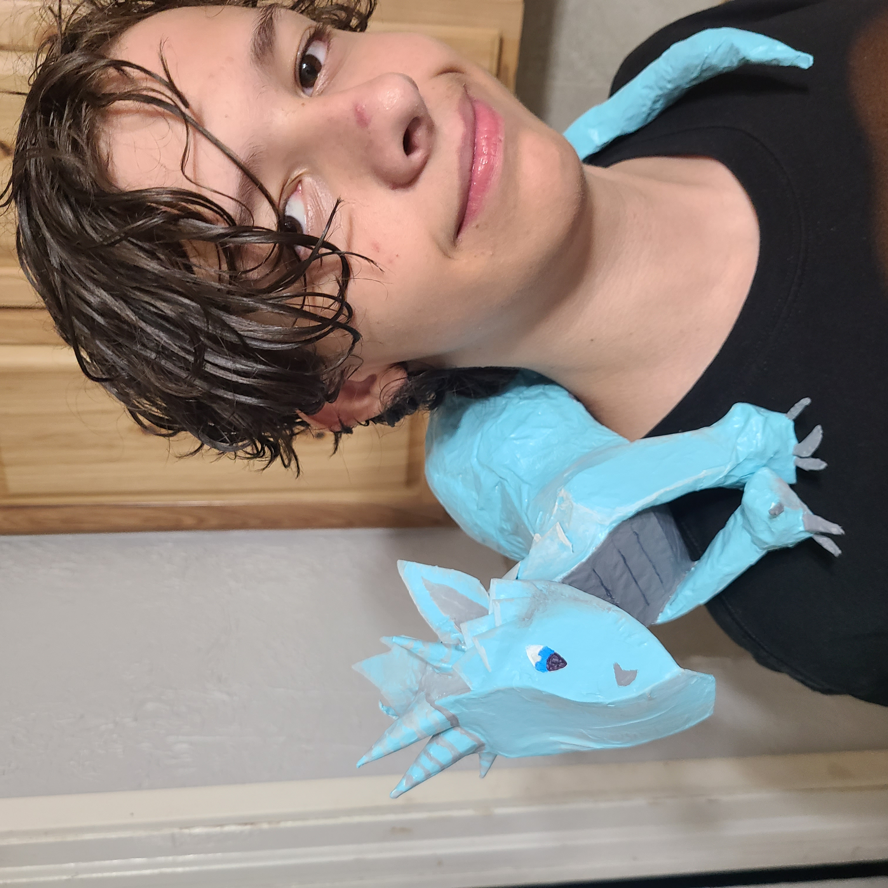

I have always loved art. It is a great way to express the many sides of myself. I have make paper mache dragons that can ride on my shoulder. I have made art from the fall leaves. I have also worked with watercolors, markers, graphite, and color pencils. Right now I have been working on block cards. They are character cards depicting my friends "Fur"sonas that I made up. I really have been enjoying drawing anthropomorphic animals.


Back to Home